Generative AI & 3D vision
Hong Li 李宏
Ph.D. candidate · Beihang University
I am a Ph.D. candidate in the School of Automation at Beihang University, advised by Prof. Baochang Zhang. My research brings together generative modeling, 3D vision, and neural rendering to create editable 3D assets and controllable 4D content.
My work spans digital humans, part-level 3D geometry, and physically based (PBR) materials, alongside video generation, editing, and relighting. I combine diffusion models with geometric and physical priors to improve visual fidelity and material consistency. For dynamic content, I focus on temporal consistency, identity preservation, and control over motion and lighting.
My broader interests include multimodal world models and sim-to-real transfer, especially how controllable generation and physically grounded representations can support learning across simulated and real-world environments.
I am currently a Research Scientist Intern at Meshy, working on 3D geometry and PBR texture generation. I contribute to the full development cycle, from data preparation and model training to evaluation, deployment, and product iteration. Previously, I worked at BAAI's Controllable World Model Center, Shengshu Technology, Baidu, and Momo, on 3D reconstruction, generative models, and digital human animation.
Open to research roles & postdoctoral opportunities · 2026/2027
Education
Research Interests
News
- Sep 20261 paper (EditDistill) accepted to NeurIPS 2026!
- July 20261 paper (UltraTex) accepted to SIGGRAPH Asia 2026 Journal Track / ACM TOG!
- July 20261 paper (GeoStereo) accepted to ACM MM 2026!
- June 20261 paper (Monocular Avatar Reconstruction) accepted to ECCV 2026!
- April 20262 papers (Relit-LiVE, UniVidX) accepted to SIGGRAPH 2026! 🎉
- April 2026NeAR selected as CVPR 2026 Highlight. Code.
- Feb 20262 papers (NeAR, PartDiffuser) accepted to CVPR 2026!
- Jan 20261 paper (LINO) accepted to ICLR 2026.
- Jan 20261 paper (DKT) accepted to ICRA 2026.
- Dec 2025Joined Meshy as a Generative AI Researcher (Rising Intern).
- Sep 2025UniTransfer accepted to NeurIPS 2025 as a poster.
- Feb 20251 paper (AnimateAnything) accepted to CVPR 2025.
- Jan 2025Joined BAAI (Controllable World Model Center) as an algorithm intern.
- Feb 20241 paper (UV-IDM) accepted to CVPR 2024.
- Feb 2024Joined Shengshu Technology as an algorithm engineer.
- Jul 2023Started internship at Baidu Visual Technology Department.
Selected Publications
* Equal contribution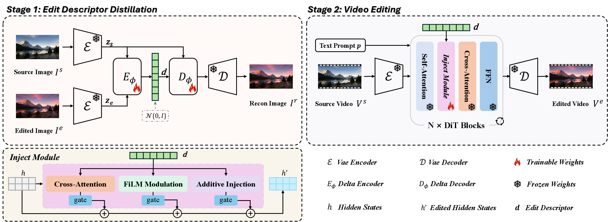
NeurIPS 2026
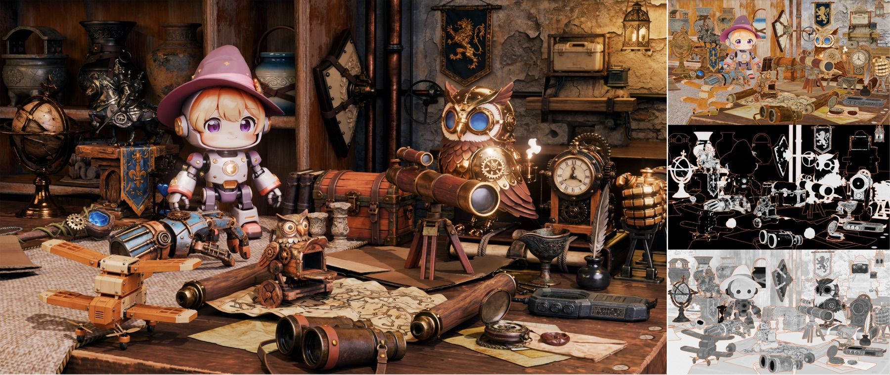
SIGGRAPH Asia 2026 Journal Track / ACM TOG
Project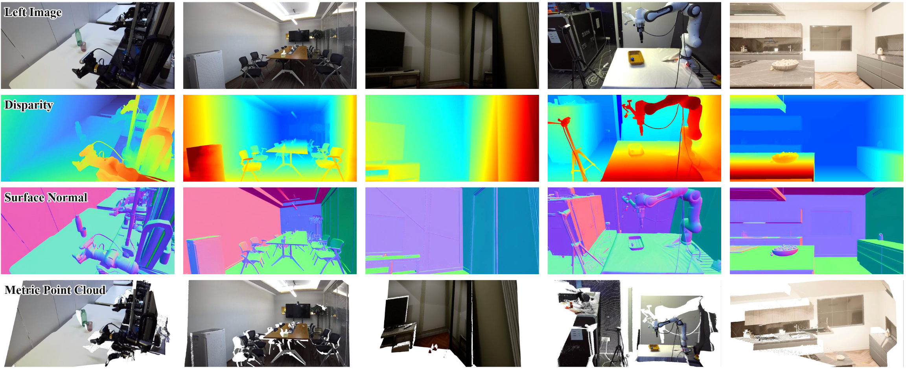
ACM MM 2026
Paper OpenReview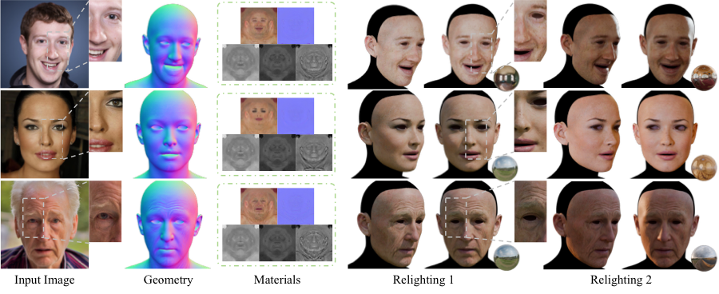
ECCV 2026
Project
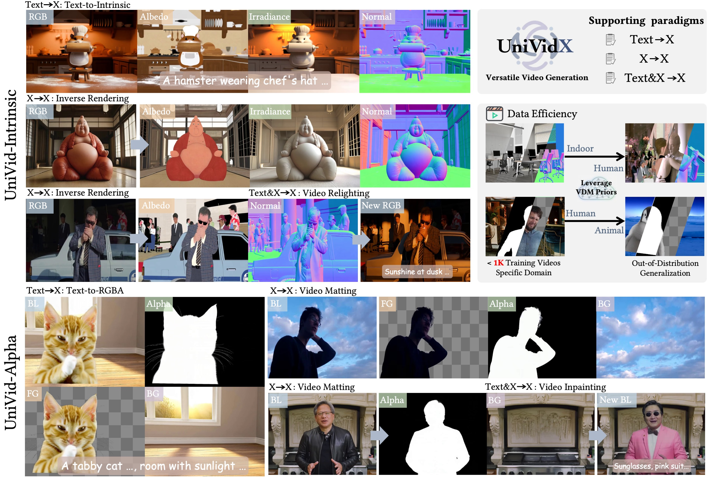


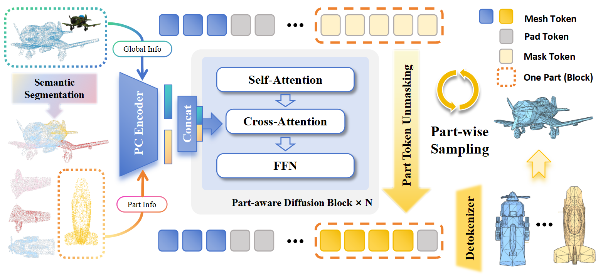
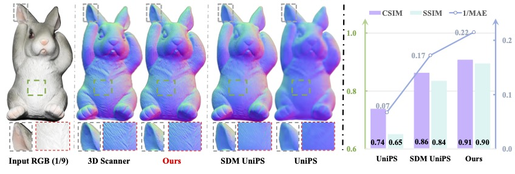

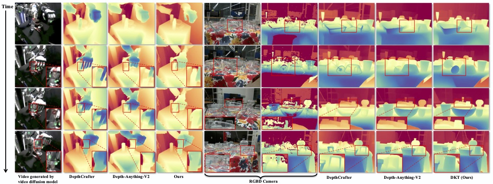

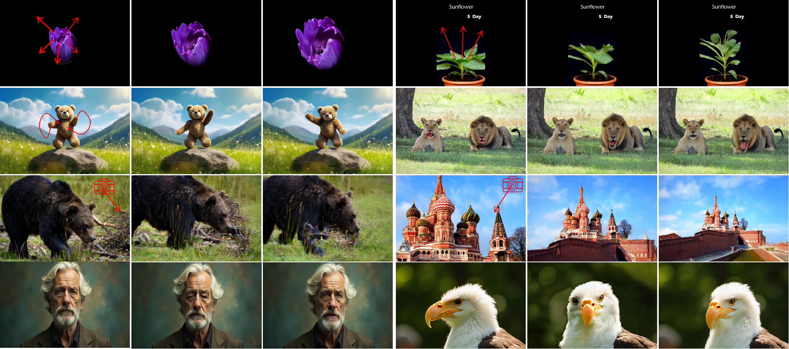

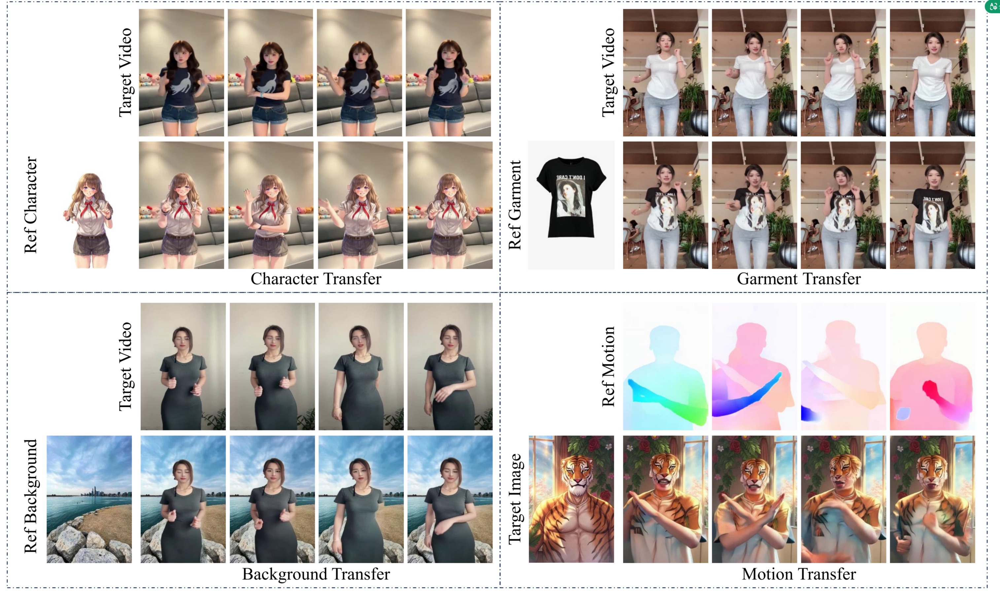

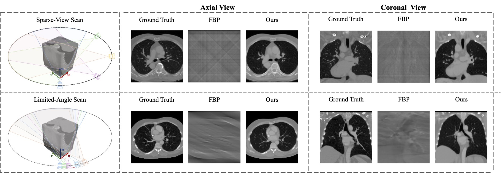
IJCV 2025
Paper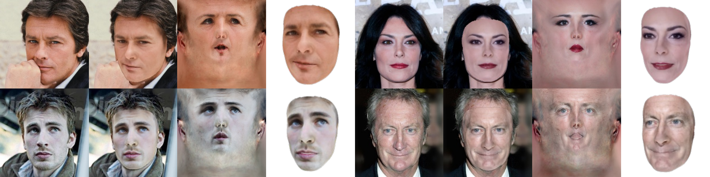

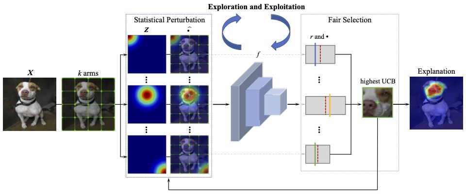

Intern Experience
-
Dec 2025 – PresentMeshy – Generative AI Researcher (Rising Intern)
3D texture generation; data preparation, model training, evaluation, and deployment iterations
-
Jan 2025 – Dec 2025Beijing Academy of Artificial Intelligence (BAAI) – Controllable World Model Center, Algorithm Intern
3D reconstruction & neural rendering
Mentor: Hao Zhao -
Feb 2024 – Jan 2025Shengshu Technology – Research Department, Algorithm Engineer
3D generation & video generation research
Mentor: Yikai Wang, Yiqi Jiang -
Jul 2023 – Jan 2024Baidu – Visual Technology Department, Algorithm Intern
3D face reconstruction
-
Dec 2021 – May 2023Momo (Zhiwen Technology) – Deep Learning Center, Intern
Face animation
Mentor: Tianxiang Zheng